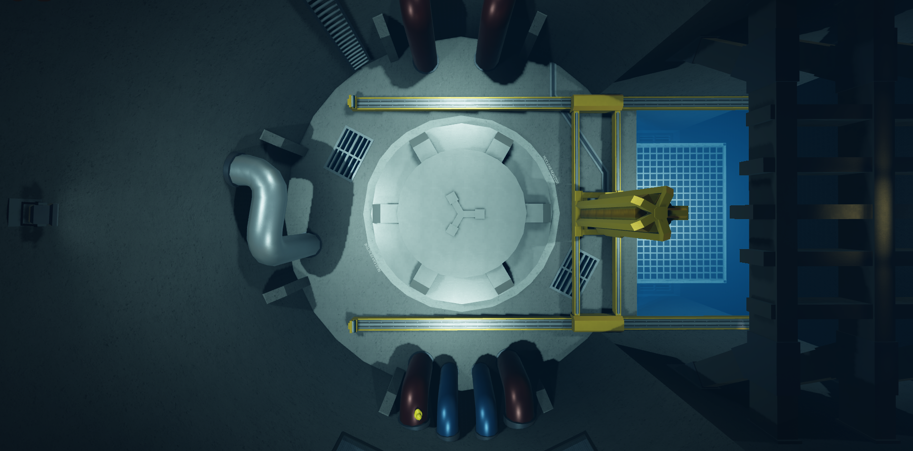

Shutdown Procedure
Instructions for safely shutting down the reactor.
Learn moreMalfunctions are unexpected events that can occur in the reactor system, potentially leading to safety issues or operational disruptions. Understanding these malfunctions is crucial for effective reactor operation and maintenance. This section will cover all the possible malfunctions inside the reactor and how to identify them. If you are looking for how to resolve these issues, see the maintenance page.
STOP whatever you're doing and immeadiately shut down the reactor.
THINK and determine the appropriate course of action.
ACT and order the appropriate repair.
REVIEW your actions and make sure you haven't made or caused any errors before restarting the reactor.
Below is a table with the malfunctions, their effects, and the associated error message.
| Malfunction | Description | Error Message |
|---|---|---|
| Pump Fault | The Feedwater Pumps may misbehave, not function as intended and/or unexpectedly shuts down. | PUMP X FAULT |
| Pressurizer Hull Fault | The Pressurizer fails to function as intended, resulting in gradual loss of Pressure and Water Level. | PRESSURIZER LEAK DETECTED! |
| Pressurizer Heater Fault | Heaters do not increase Pressure and operators will hear a sizzling sound coming from the Pressurizer. | - |
| Control Rod Fault | Control Rods do not lower/raise at the expected speed or switches Control Rod Levels unexpectedly. | - |
| Measuring Equipment Fault | Measurement readings such as Temperature and Pressure may yield different results for both displays, leading to a disagreement. | CALIBRATION ERROR |
| Pipe Leak | Water Level drops drastically without the use of the Letdown Valve. | REACTOR LEAK DETECTED! |
| Boric Acid System Fault | Boric Acid Concentration cannot increase, even at high concentration targets. | - |
Other important procedures when it comes to reactor operations.

Instructions for safely shutting down the reactor.
Learn more
Common issues, how to identify and resolve them.
Learn more
Procedures for regular maintenance and inspection of the reactor.
Learn more
Procedures for handling emergency situations in the reactor.
Learn more